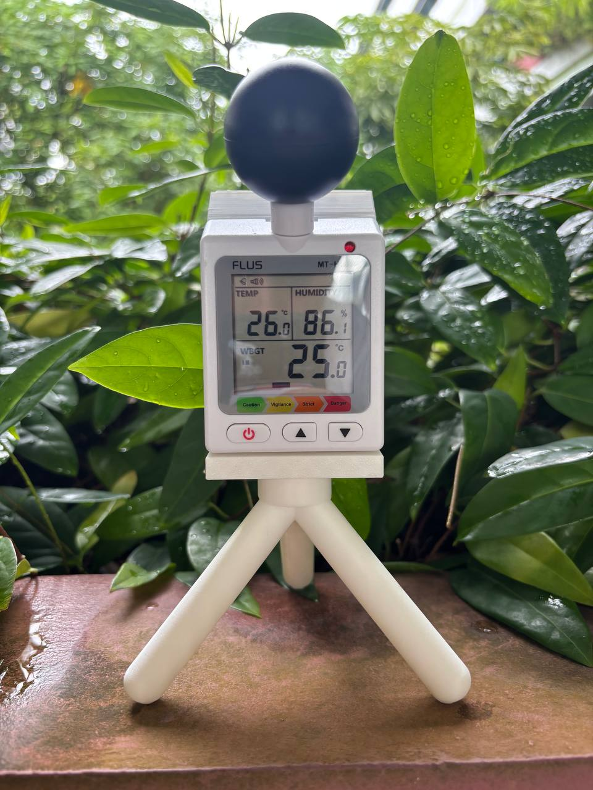

KOKONI 3D / TIIDE Programme
Completed an internship at KOKONI 3D as part of the TIIDE Programme, contributing to a mini paint mixer concept for fast and accurate paint dispensing and exploring AI-powered image-to-object workflows.
Engineering Student / Product Builder
I build practical prototypes at the intersection of product design, medical technology, hardware, and AI-enabled creative workflows.

01 / About
I am an engineering student who enjoys moving from ambiguous problems to tangible prototypes. My work spans health-tech concepts, solar-powered sensing, microfluidics support work, classroom AI tools, and 3D product development.
Through the TIIDE Scholarship under Zhejiang University, I was exposed to China's innovation ecosystem through industry visits and founder conversations at companies including Alibaba Group, XbotPark, DEEP Robotics, ROBAM, and Daily Interactive. That experience sharpened my interest in how startups validate ideas, survive uncertainty, and scale products.
At KOKONI 3D, I worked on product initiatives around a mini paint mixer for fast, accurate paint dispensing and an AI-powered image-to-object workflow. I am especially interested in rapid prototyping, AI-assisted design workflows, medical technology, and practical product systems that can be tested in the real world.
02 / Experience
Completed an internship at KOKONI 3D as part of the TIIDE Programme, contributing to a mini paint mixer concept for fast and accurate paint dispensing and exploring AI-powered image-to-object workflows.
Built and documented prototypes across sleep-health, WBGT heat-stress monitoring, classroom AI feedback, 3D design, and microfluidics-related development work.
Looking for opportunities where I can apply product design, rapid prototyping, hardware development, and AI-assisted workflows to build useful tools with clear user or industry value.
03 / Projects
04 / Contact
I am open to internships, collaborations, and roles involving product development, rapid prototyping, medical technology, hardware systems, or AI-assisted design workflows.